Classifying infant cry audio into five physiological states using acoustic feature engineering and classical ML
A crying baby can't tell you what's wrong. But research going back to 1968 (Wasz-Hockert) shows that infant cries carry measurable, acoustically distinct signatures tied to the baby's state.
"Neh" reflex
Suction pattern
"Eairh" reflex
Abdominal tension
"Eh" reflex
Chest vibration
"Heh" reflex
Skin irritation
"Owh" reflex
Yawning pattern
The Periaqueductal Gray (PAG) in the brainstem produces three phonation modes: modal voice (normal cry), hyperphonation (F0 > 1kHz, indicates pain), and dysphonation (harsh, turbulent). Each mode leaves a distinct fingerprint in the audio — and that's exactly what our system captures. Based on the Dunstan Baby Language framework (2006): 5 reflexive sounds mapped to 5 needs.
Each cry is a .wav audio file — a raw waveform of sound pressure over time. Here's how we turn raw sound into something a machine can learn from.
Amplitude over time
56,000 samples
(7 sec × 8kHz)
Time × Frequency grid
Visual heatmap
of energy per band
Summarize into numbers
411 features
per audio clip
Train classifier
Predict class
from feature vector
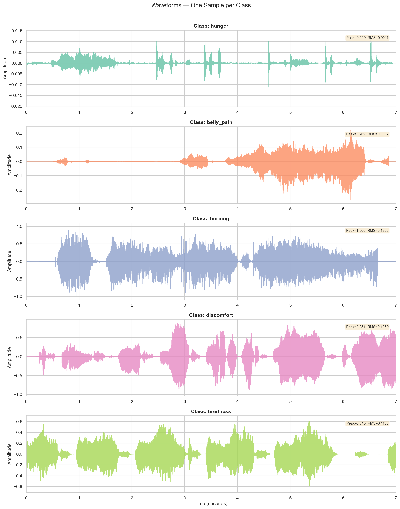
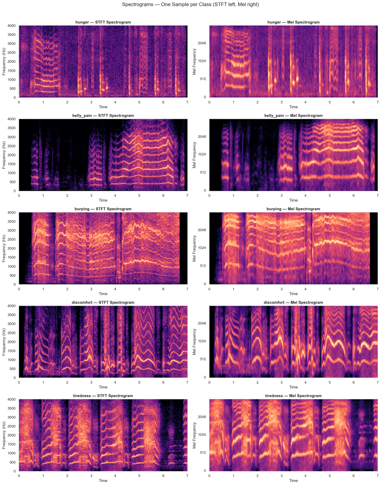
A 7-second clip at 8kHz = 56,000 raw samples. That's too many for direct ML input. Instead, we slice the audio into short overlapping frames, compute frequency analysis on each frame, and summarize the result into a compact 411-number vector that captures everything a model needs to classify the cry.
Our original dataset had 382 hunger clips but only 8 burping clips. A model trained on this would just predict "hunger" for everything and score 84% accuracy — while being completely useless.
Heavily imbalanced
Audio transformations
Balanced to ~300/class
We used pitch shifting (±0.5, 1, 2 semitones), time stretching (0.85x–1.15x), white noise (25–30 dB SNR), reverb simulation, gain variation (±6 dB), band-pass filtering, and combo transforms. Train/test split: 80/20 stratified (1,131 / 283).
Every clip goes through identical preprocessing to ensure consistent feature dimensions.
Matches native dataset rate. Nyquist = 4 kHz, enough for infant cries since important content is below 4 kHz.
Short clips zero-padded, long clips truncated. Every sample produces the exact same feature vector size.
Six feature groups extracted per clip. StandardScaler normalization (zero mean, unit variance) before training.
Why we use both — and why CQCC is the critical differentiator in our approach.
Mel-Frequency Cepstral Coefficients
Constant-Q Cepstral Coefficients
Why CQCC matters for infant cries: Cry harmonics are densely packed at low frequencies (F0 around 200–600 Hz). CQT gives more frequency bins there = better harmonic resolution. At high frequencies, CQT gives better time resolution = captures burst transients and cry onsets. MFCC uses the same resolution everywhere.
MFCC → Overall timbre, vocal tract shape
CQCC → Harmonic structure, cry type signature
Chroma → Pitch distribution across the octave
Contrast → Peak-to-valley per frequency band
Pitch → F0 statistics (pain=high, tired=low)
Spectral → Brightness, noisiness, energy
Each group captures a different acoustic aspect. Feature importance analysis confirms MFCC dominates, but CQCC and pitch features appear in the top 20 — all groups contribute. Deltas (Δ) capture velocity of change. Delta-deltas (ΔΔ) capture acceleration. Mean summarizes central tendency, std captures variability.
Bayesian Gaussian Mixture with Dirichlet process prior. Generative approach — one density model per class. Auto-selects number of components (up to 8).
RBF kernel with SMOTE oversampling inside CV folds (prevents data leakage). One-vs-One decomposition = 10 binary classifiers voting.
500 decision trees with balanced subsample weights. Bagging reduces variance. Provides feature importance rankings.
300 boosting rounds with L1/L2 regularization. Each tree corrects errors of previous trees. Balanced sample weights handle class imbalance.
Stacking: SVM + RF + XGBoost as base learners. Each outputs 5-class probabilities → 15-dim meta-features → Logistic Regression meta-learner.
| Model | Accuracy | Macro F1 | Weighted F1 | MCC | Kappa | AUC-ROC |
|---|---|---|---|---|---|---|
| GMM | 62.2% | 0.547 | 0.599 | 0.519 | 0.506 | 0.801 |
| SVM | 92.6% | 0.921 | 0.925 | 0.906 | 0.905 | 0.989 |
| Random Forest | 92.9% | 0.929 | 0.929 | 0.910 | 0.910 | 0.987 |
| XGBoost Best | 96.5% | 0.965 | 0.965 | 0.955 | 0.955 | 0.992 |
| Ensemble | 95.1% | 0.944 | 0.950 | 0.937 | 0.937 | 0.994 |
Accuracy · 0.965 Macro F1 · 0.955 MCC
Near-perfect probability calibration
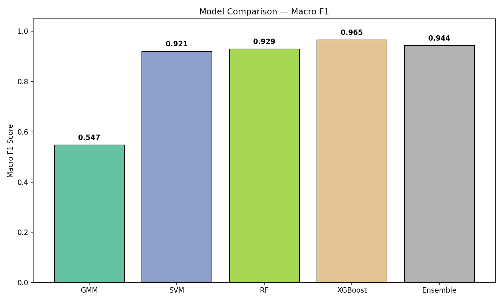
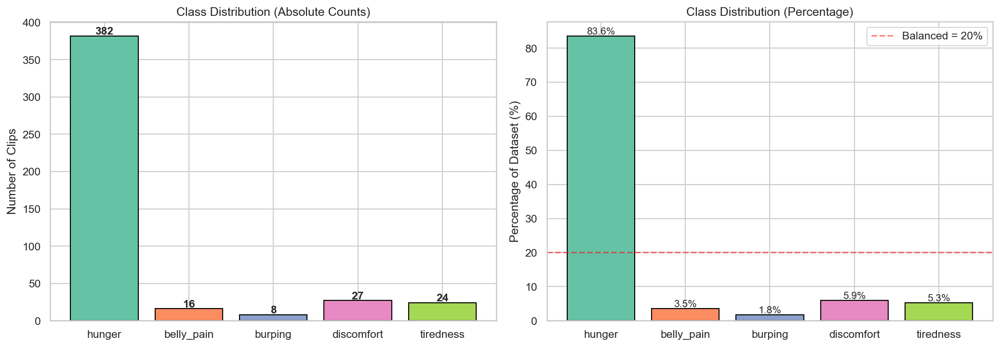
All F1 scores between 0.96–0.98 — no class is neglected.
Tiredness has perfect precision (1.00) — when the model says "tired", it's always right. Hunger has 0.99 recall — catches almost every hunger cry. Belly pain has the best F1 at 0.98.
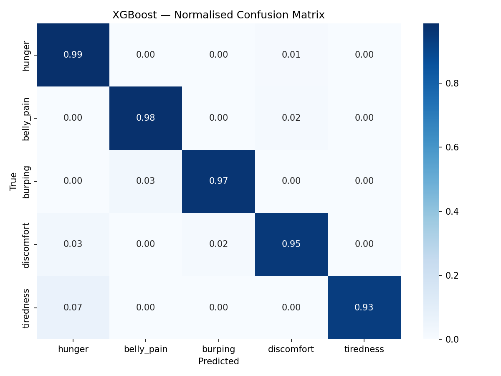
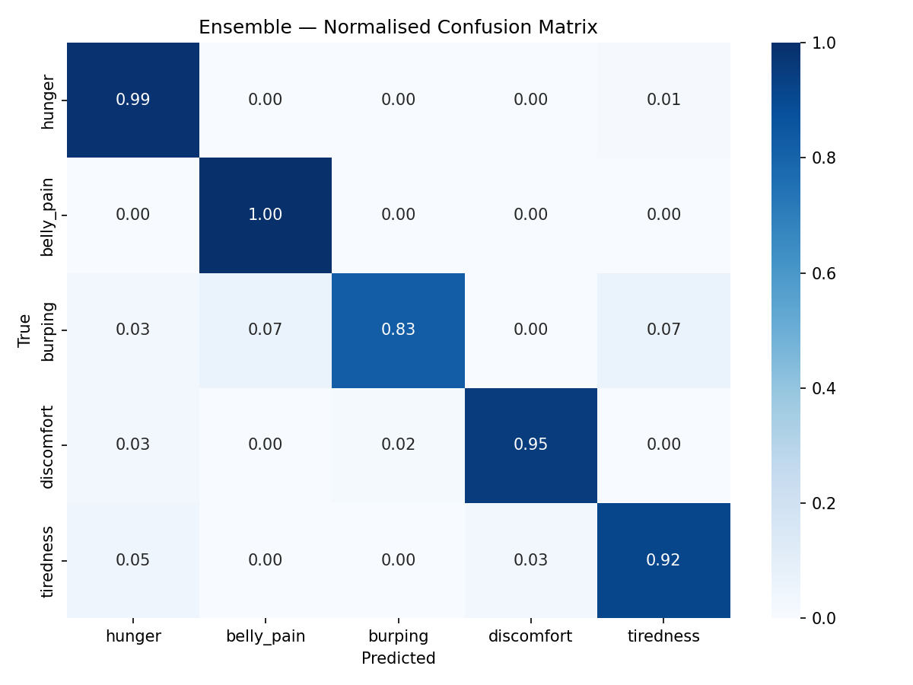
Share overlapping Dunstan reflexes (Eairh/Heh) and similar abdominal tension. Both involve physical discomfort — the main source of confusion across all models.
Originally only 8 samples. Despite heavy augmentation, XGBoost achieves 0.97 F1 — showing effective feature engineering and balanced weights work.
The "Neh" suction reflex creates a unique spectral fingerprint. 0.99 recall means we catch almost every hunger cry.
1.00 precision = zero false positives. The yawn-like "Owh" reflex creates a low-frequency pattern never confused with other classes.
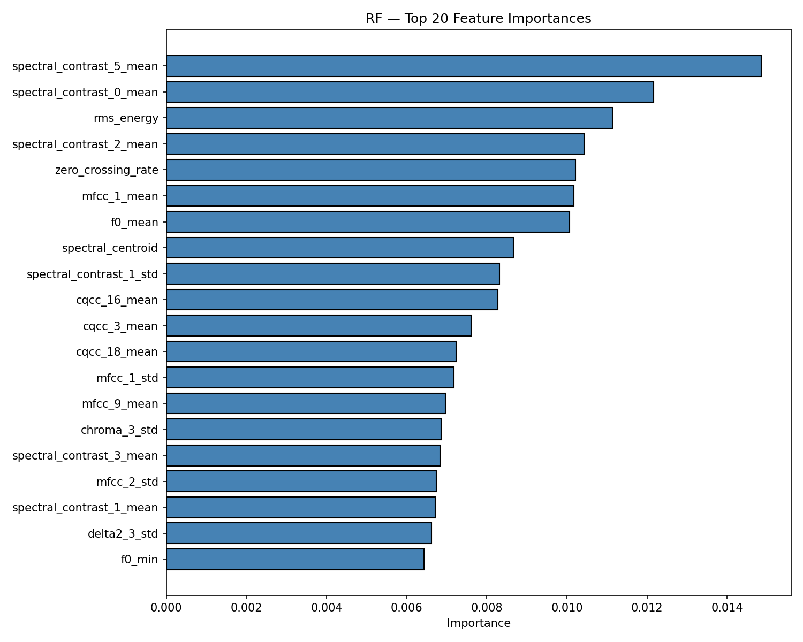
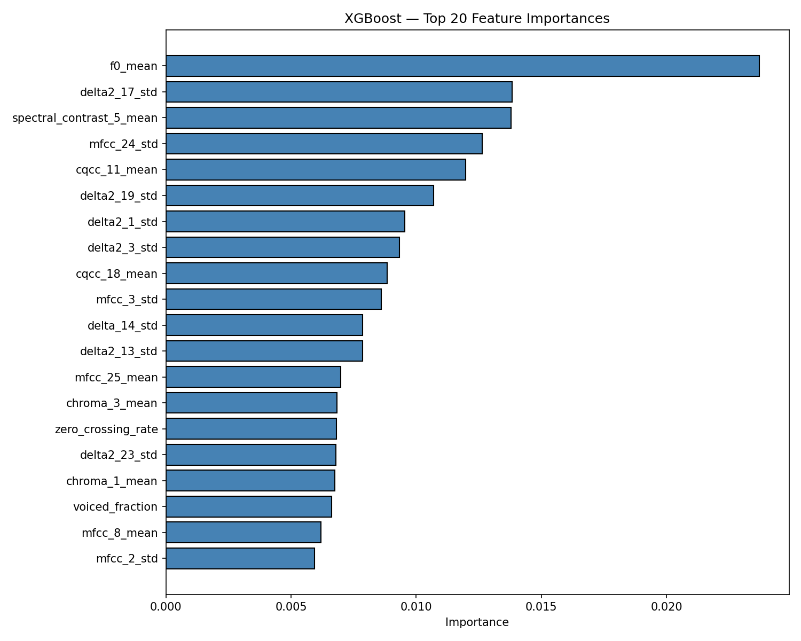
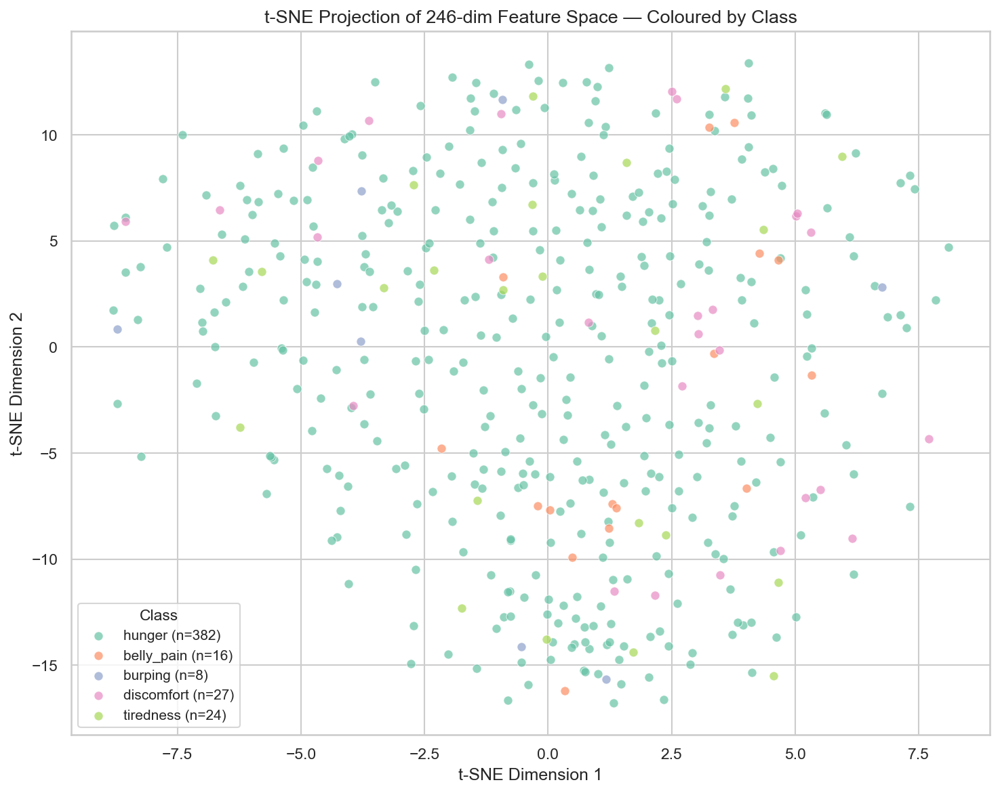
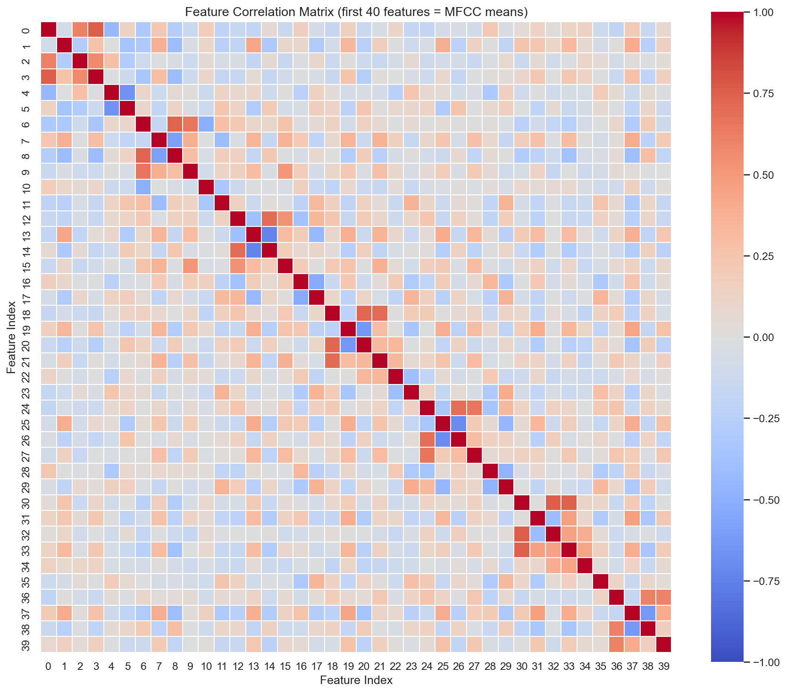
Generative model: learns P(X|class) — the full data distribution per class. In 411 dimensions, estimating covariance matrices requires enormous data. With ~226 training samples per class, the model is severely under-constrained.
Curse of dimensionality: needs ~O(d²) samples for full covariance. d=411 → ~169,000 samples needed (we have ~226).
Discriminative model: learns P(class|X) — the decision boundary directly. Tree-based models are robust to high dimensions because each split only considers one feature. Built-in feature selection ignores irrelevant dimensions automatically.
Sequential boosting: each tree corrects the previous tree's mistakes, focusing on hard samples.
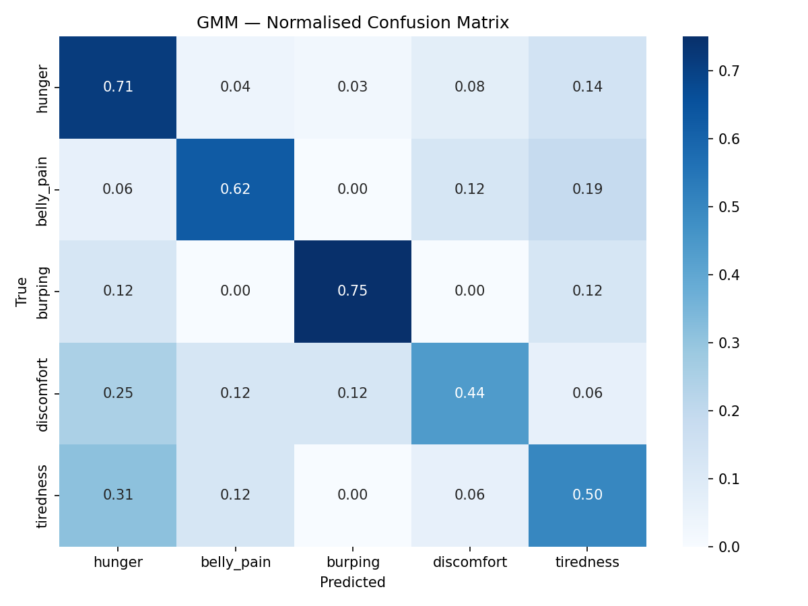
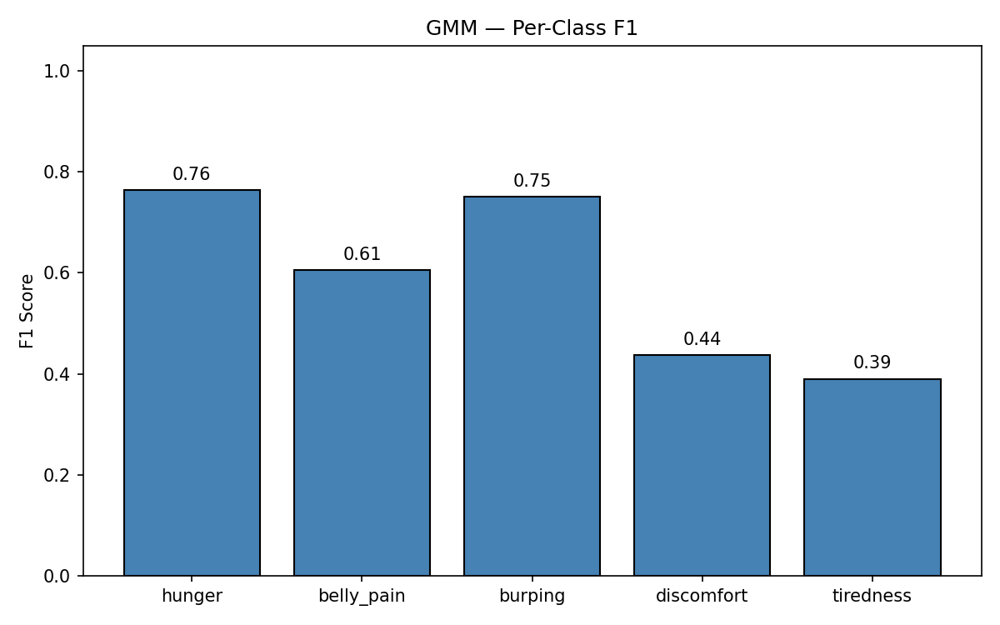
Going from basic 13-MFCC to our 411-dim vector (with CQCC, pitch, contrast, chroma) is what made 96.5% accuracy possible. Both RF and XGBoost feature importance confirm all groups contribute.
457 files with 8 burping samples → 1,414 files with 144 burping. Without augmentation, minority classes would be completely ignored by every model.
GMM (generative) = 62%. SVM/RF/XGBoost (discriminative) = 92–96%. In 411 dimensions, density estimation fails; direct decision boundaries succeed.
Ensemble AUC-ROC (0.994) > XGBoost (0.992). For clinical deployment where confidence scores matter, ensemble's probability estimates are more reliable.
Building on our 96.5% classical ML baseline with deep learning and real-world deployment.
Convert audio to Mel spectrogram images. CNN learns spatial patterns (formant structure, harmonic bands). LSTM captures temporal dynamics (cry onset, intensity contour, breathing patterns).
Self-supervised transformer pre-trained on 960h of speech (LibriSpeech). Fine-tune on infant cries to learn representations that hand-crafted features miss.
Deploy via ONNX/TFLite. Record baby's cry, get instant classification with confidence scores. Help caregivers respond effectively.
Questions & Discussion
Semester 6 · March 2026